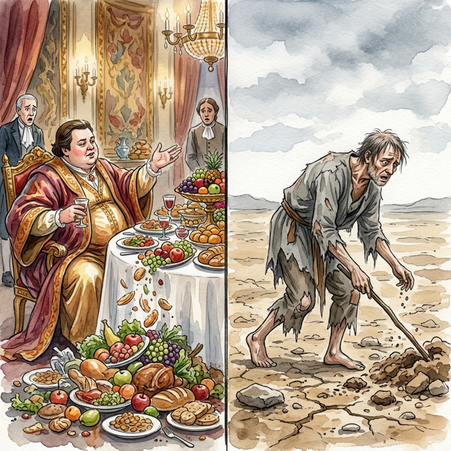
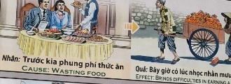

El Plato VacíoThe Empty PlateIl piatto vuoto空盘子اللوحة الفارغةПустая тарелкаDer leere TellerL'assiette vide空の皿O Prato Vazio
La autoridad sin compasión es un préstamo con intereses de miseria. Authority without compassion is a loan with interest of misery.
Tener la fortuna de la prosperidad no debe ser jamás un escudo para la indiferencia ni el despilfarro. Cuando tiramos o despreciamos el alimento, ignorando olímpicamente que millones padecen hambre, quebramos nuestra conexión vital con la providencia...
Este acto de absoluta arrogancia rasga los hilos dorados de la supervivencia. La soberbia de malgastar lo que nutre a los cuerpos no cae en saco roto; el universo lo registra como un profundo desprecio por la vida misma.
Ya que el balance divino exige respeto, quien tira el pan hoy será condenado mañana a sudar sangre, polvo y lágrimas en tierras yerras, solo para rogar por las migajas que en el pasado arrojó al lodo.
Having the fortune of prosperity should never be a shield for indifference or waste. When we throw away or despise food, blatantly ignoring that millions suffer from hunger, we break our vital connection with providence...
This act of utter arrogance tears the golden threads of survival. The arrogance of wasting what nourishes the bodies does not fall on deaf ears; the universe registers it as a deep contempt for life itself.
Since the divine balance demands respect, he who throws bread today will be condemned tomorrow to sweat blood, dust and tears in barren lands, only to beg for the crumbs that he threw into the mud in the past.
Avere la fortuna della prosperità non dovrebbe mai essere uno scudo per l’indifferenza o lo spreco. Quando buttiamo via o disprezziamo il cibo, ignorando sfacciatamente che milioni di persone soffrono la fame, interrompiamo il nostro legame vitale con la provvidenza...
Questo atto di totale arroganza strappa i fili d’oro della sopravvivenza. L’arroganza di sperperare ciò che nutre i corpi non cade nel vuoto; l'universo lo registra come un profondo disprezzo per la vita stessa.
Poiché l'equilibrio divino esige rispetto, chi getta il pane oggi sarà condannato domani a sudare sangue, polvere e lacrime in terre aride, per poi mendicare le briciole che in passato ha gettato nel fango.
拥有繁荣的财富绝不应该成为冷漠或浪费的盾牌。当我们扔掉或鄙视食物，公然无视数百万人遭受饥饿时，我们就切断了与上帝的重要联系......
这种极度傲慢的行为撕裂了生存的金线。浪费滋养身体的东西的傲慢并没有被置若罔闻。宇宙将其记录为对生命本身的深深蔑视。
既然神圣的平衡需要尊重，那么今天扔面包的人明天就会受到谴责，在贫瘠的土地上流着血、灰尘和泪水，只是为了乞讨他过去扔进泥里的面包屑。
إن الحصول على ثروة من الرخاء لا ينبغي أبدًا أن يكون درعًا للامبالاة أو التبذير. عندما نتخلص من الطعام أو نزدريه، متجاهلين بشكل صارخ أن الملايين يعانون من الجوع، فإننا نقطع علاقتنا الحيوية بالعناية الإلهية...
هذا الفعل من الغطرسة المطلقة يمزق الخيوط الذهبية للبقاء. إن الاستكبار في إهدار ما يغذي الأجساد لا يقع على آذان صماء؛ يسجله الكون على أنه ازدراء عميق للحياة نفسها.
وبما أن الميزان الإلهي يتطلب الاحترام، فإن من يرمي الخبز اليوم، سيحكم عليه غداً أن يتعرق دماً وتراباً ودموعاً في الأراضي القاحلة، ليستسول الفتات الذي ألقاه في الوحل في الماضي.
Успех и процветание никогда не должны быть щитом для безразличия и расточительства. Когда мы выбрасываем или презираем еду, откровенно игнорируя тот факт, что миллионы людей страдают от голода, мы разрываем свою жизненно важную связь с провидением...
Этот акт крайнего высокомерия рвет золотые нити выживания. Высокомерие растраты того, что питает тела, не остается без внимания; Вселенная регистрирует это как глубокое презрение к самой жизни.
Поскольку божественное равновесие требует уважения, тот, кто сегодня бросает хлеб, завтра будет обречен потеть кровью, пылью и слезами на бесплодной земле только для того, чтобы просить крохи, которые он бросил в грязь в прошлом.
Das Vermögen des Wohlstands sollte niemals ein Schutzschild für Gleichgültigkeit oder Verschwendung sein. Wenn wir Lebensmittel wegwerfen oder verachten und völlig ignorieren, dass Millionen Menschen an Hunger leiden, brechen wir unsere lebenswichtige Verbindung zur Vorsehung ...
Dieser Akt völliger Arroganz zerreißt die goldenen Fäden des Überlebens. Die Arroganz, das zu verschwenden, was den Körper nährt, stößt nicht auf taube Ohren; Das Universum registriert es als eine tiefe Verachtung des Lebens selbst.
Da das göttliche Gleichgewicht Respekt erfordert, wird derjenige, der heute Brot wirft, morgen dazu verdammt sein, Blut, Staub und Tränen in kargen Ländern zu schwitzen, nur um um die Krümel zu betteln, die er in der Vergangenheit in den Schlamm geworfen hat.
Avoir la chance de prospérer ne devrait jamais être un bouclier contre l’indifférence ou le gaspillage. Lorsque nous jetons ou méprisons la nourriture, ignorant ouvertement que des millions de personnes souffrent de la faim, nous rompons notre lien vital avec la Providence...
Cet acte d’arrogance totale déchire les fils d’or de la survie. L’arrogance de gaspiller ce qui nourrit les corps ne tombe pas dans l’oreille d’un sourd ; l’univers l’enregistre comme un profond mépris de la vie elle-même.
Puisque l'équilibre divin exige le respect, celui qui jette du pain aujourd'hui sera condamné demain à suer du sang, de la poussière et des larmes sur des terres arides, pour mendier les miettes qu'il jetait autrefois dans la boue.
繁栄という幸運を手に入れたからといって、決して無関心や浪費の盾になってはなりません。何百万もの人々が飢えに苦しんでいることをあからさまに無視して、食べ物を捨てたり軽蔑したりすると、私たちは摂理との重要なつながりを断ち切ることになります...
このまったく傲慢な行為は、生存の黄金の糸を引き裂きます。体に栄養を与えるものを無駄にするという傲慢さは耳を貸さないものではありません。宇宙はそれを生命そのものに対する深い軽蔑として記録します。
神聖なバランスには敬意が必要であるため、今日パンを投げる者は、明日は不毛の地で血と塵と涙を流し、過去に泥の中に投げ込んだパンくずを乞うだけの罪に定められることになる。
Ter a sorte da prosperidade nunca deve ser um escudo para a indiferença ou o desperdício. Quando jogamos fora ou desprezamos os alimentos, ignorando abertamente que milhões de pessoas passam fome, quebramos a nossa ligação vital com a providência...
Este ato de total arrogância rasga os fios dourados da sobrevivência. A arrogância de desperdiçar o que nutre os corpos não cai em ouvidos surdos; o universo registra isso como um profundo desprezo pela própria vida.
Como o equilíbrio divino exige respeito, quem hoje joga o pão estará condenado amanhã a suar sangue, poeira e lágrimas em terras áridas, apenas para mendigar pelas migalhas que jogou na lama no passado.
El Karma trae el fin rápido de las bendiciones materiales. La riqueza se esfuma; el alma debe experimentar lo que significa estar en el lado vulnerable para valorar la justicia.
Karma brings a quick end to material blessings. Wealth vanishes; the soul must experience what it means to be on the vulnerable side to value justice.
Il karma pone fine rapidamente alle benedizioni materiali. La ricchezza svanisce; l'anima Devi sperimentare cosa significa essere dalla parte vulnerabile per dare valore alla giustizia.
业力会很快结束物质上的祝福。财富消失；灵魂 You must experience what it means to be on the vulnerable side to value justice.
الكارما تجلب نهاية سريعة للبركات المادية. الثروة تختفي؛ الروح يجب أن تختبر ما يعنيه أن تكون في الجانب الضعيف لتقدير العدالة.
Карма приводит к быстрому прекращению материальных благ. Богатство исчезает; душа Вы должны испытать, что значит быть уязвимым, чтобы ценить справедливость.
Karma beendet den materiellen Segen schnell. Reichtum verschwindet; die Seele Um Gerechtigkeit zu schätzen, müssen Sie erfahren, was es bedeutet, auf der verletzlichen Seite zu stehen.
Le karma met fin rapidement aux bénédictions matérielles. La richesse disparaît ; l'âme Vous devez expérimenter ce que signifie être du côté vulnérable pour valoriser la justice.
カルマは物質的な祝福をすぐに終わらせます。富は消えます。魂 正義を大切にするためには、弱い側に立つことが何を意味するのかを経験する必要があります。
Karma traz um fim rápido às bênçãos materiais. A riqueza desaparece; a alma You must experience what it means to be on the vulnerable side to value justice.
El Granero Agotado
The Sold Out Barn
Il fienile esaurito
售完的谷仓
الحظيرة المباعة
Распроданный сарай
Die ausverkaufte Scheune
La grange épuisée
完売した納屋
O celeiro esgotado
Cuentan que un próspero terrateniente organizaba majestuosos banquetes donde se jactaba ordenando tirar a los perros grandes manjares intactos, tan solo para divertir a sus invitados con su opulencia...
Aquellos años de ceguera terminaron abruptamente al girar la Rueda. De pronto, se halló a sí mismo en un paramo desolado en una vida posterior, buscando agua entre grietas secas y rogando por un mísero bocado para sobrevivir a una fatiga devoradora.
Fue allí, entre el llanto y el polvo, donde comprendió su error: quien humilla a la tierra desperdiciando el fruto de su vientre, la tierra le humillará cerrándole el sustento.
They say that a prosperous landowner organized majestic banquets where he boasted by ordering large intact delicacies to be thrown to the dogs, just to amuse his guests with his opulence...
Those years of blindness ended abruptly as the Wheel turned. Suddenly, he found himself on a desolate wasteland in a later life, searching for water between dry crevices and begging for a measly morsel to survive a devouring fatigue.
It was there, among the tears and the dust, where he understood his mistake: whoever humiliates the earth by wasting the fruit of his womb, the earth will humiliate him by closing his livelihood.
Si racconta che un ricco proprietario terriero organizzasse maestosi banchetti in cui si vantava ordinando di gettare ai cani grandi prelibatezze intatte, pur di divertire i suoi ospiti con la sua opulenza...
Quegli anni di cecità finirono bruscamente quando la Ruota girò. All'improvviso, in una vita successiva, si ritrovò in una terra desolata, alla ricerca di acqua tra fessure secche e implorando un misero boccone per sopravvivere a una fatica divorante.
Fu lì, tra le lacrime e la polvere, che capì il suo errore: chi umilia la terra sprecando il frutto del suo grembo, la terra lo umilierà chiudendogli i mezzi di sostentamento.
据说，一位富裕的地主举办了盛大的宴会，并下令将大量完好无损的美味佳肴扔给狗，只是为了用自己的富裕来逗乐他的客人......
随着车轮的转动，那些失明的岁月戛然而止。突然，他发现自己在晚年生活在一片荒凉的荒原上，在干燥的缝隙中寻找水源，并乞求一点点食物来度过疲惫不堪的疲惫。
正是在那里，在泪水和尘土中，他明白了自己的错误：谁因浪费自己子宫的果实而羞辱大地，大地也会因关闭他的生计而羞辱他。
يقولون أن مالك أرض ثري نظم ولائم مهيبة حيث كان يتفاخر بأمر بإلقاء أطباق كبيرة سليمة للكلاب، فقط لتسلية ضيوفه ببذخه...
انتهت سنوات العمى تلك فجأة عندما دارت العجلة. وفجأة، وجد نفسه في أرض قاحلة مقفرة في وقت لاحق من حياته، يبحث عن الماء بين الشقوق الجافة ويتوسل لقمة تافهة للتغلب على التعب الشديد.
وهناك، بين الدموع والتراب، فهم خطأه: من أذل الأرض بإضاعة ثمرة بطنه، أذلته الأرض بقطع رزقه.
Рассказывают, что один зажиточный помещик устраивал величественные банкеты, на которых хвастался тем, что приказывал бросать собакам большие неповрежденные деликатесы, лишь бы потешить гостей своим богатством...
Эти годы слепоты внезапно закончились, когда Колесо повернулось. Внезапно в более поздней жизни он оказался на пустынной пустоши, ища воду между сухими расщелинами и выпрашивая жалкий кусочек, чтобы пережить всепоглощающую усталость.
Именно там, среди слез и пыли, он понял свою ошибку: кто унизит землю, растратив плод чрева своего, того земля унизит, закрыв ему средства к существованию.
Es heißt, dass ein wohlhabender Landbesitzer majestätische Bankette veranstaltete, bei denen er prahlte, indem er befahl, große, unversehrte Köstlichkeiten den Hunden vorzuwerfen, nur um seine Gäste mit seiner Opulenz zu unterhalten ...
Diese Jahre der Blindheit endeten abrupt, als sich das Rad drehte. Plötzlich befand er sich in einem späteren Leben auf einer öden Einöde, suchte zwischen trockenen Spalten nach Wasser und bettelte um einen dürftigen Bissen, um eine verschlingende Müdigkeit zu überstehen.
Dort, zwischen den Tränen und dem Staub, verstand er seinen Fehler: Wer die Erde demütigt, indem er die Frucht seines Leibes verschwendet, den wird die Erde demütigen, indem sie ihm seine Lebensgrundlage verschließt.
On raconte qu'un riche propriétaire terrien organisait de majestueux banquets où il se vantait en faisant jeter aux chiens de grosses friandises intactes, histoire d'amuser ses convives par son opulence...
Ces années de cécité se sont terminées brusquement lorsque la Roue a tourné. Soudain, il se retrouva plus tard dans une vie désolée, cherchant de l'eau entre des crevasses sèches et mendiant un misérable morceau pour survivre à une fatigue dévorante.
C'est là, parmi les larmes et la poussière, qu'il a compris son erreur : celui qui humilie la terre en gaspillant le fruit de ses entrailles, la terre l'humiliera en lui fermant ses moyens de subsistance.
裕福な地主が盛大な宴会を企画し、その豪華さで客を楽しませるためだけに、大きなそのままの珍味を犬に投げつけるよう命じて自慢したと言われています...
車輪が回転したとき、失明の年月は突然終わりました。突然、彼は後年、荒涼とした荒地に自分がいることに気づき、乾いた裂け目の間の水を探し、むさぼり食う疲労を乗り切るためにわずかな一口を懇願していました。
涙と埃の中で、彼は自分の間違いを理解した。子宮の果実を無駄にして地球を辱める者は誰でも、地球はその人の生計を閉ざすことで彼を辱めるだろう。
Dizem que um próspero proprietário de terras organizava banquetes majestosos onde se vangloriava de mandar atirar aos cães grandes iguarias intactas, apenas para divertir os seus convidados com a sua opulência...
Aqueles anos de cegueira terminaram abruptamente quando a Roda girou. De repente, mais tarde, ele se viu em um terreno baldio desolado, procurando água entre fendas secas e implorando por um mísero pedaço para sobreviver a uma fadiga devoradora.
Foi ali, entre as lágrimas e a poeira, que ele compreendeu o seu erro: quem humilha a terra desperdiçando o fruto do seu ventre, a terra o humilhará fechando-lhe o sustento.

La Inspiración Original
The Original Inspiration
L'Ispirazione Originale
最初的灵感
الإلهام الأصلي
Оригинальное вдохновение
Die Ursprüngliche Inspiration
L'Inspiration Originale
元のインスピレーション
A Inspiração Original
La historia que hemos relatado en este capítulo está inspirada por el pasaje de la escena original de los murales «Tranh Nhân Quả» (Ilustraciones del Karma) del Templo Linh Ung en Da Nang, capturado en la imagen.
La storia che abbiamo raccontato in questo capitolo è ispirata al passaggio della scena originale dei murali “Tranh Nhân Quả” (Illustrazioni del Karma) del Tempio Linh Ung a Da Nang, catturati nell'immagine.
我们在本章中讲述的故事的灵感来自图像中捕获的岘港灵应寺“Tranh Nhân Quả”（业力插图）壁画的原始场景。
القصة التي رويناها في هذا الفصل مستوحاة من مقطع من المشهد الأصلي لجداريات "ترانه نهان كو" (الرسوم التوضيحية للكارما) لمعبد لينه أونغ في دا نانغ، الملتقطة في الصورة.
История, которую мы рассказали в этой главе, вдохновлена отрывком из оригинальной сцены фрески «Тран Нхан Ку» («Иллюстрации кармы») храма Линь Унг в Дананге, запечатленной на изображении.
Die Geschichte, die wir in diesem Kapitel erzählt haben, ist inspiriert von der Passage aus der Originalszene der Wandgemälde „Tranh Nhân Quả“ (Illustrationen von Karma) des Linh Ung-Tempels in Da Nang, die im Bild festgehalten ist.
L'histoire que nous avons racontée dans ce chapitre est inspirée du passage de la scène originale des peintures murales « Tranh Nhân Quả » (Illustrations du Karma) du temple Linh Ung à Da Nang, capturées dans l'image.
この章で私たちが語った物語は、ダナンのリンウン寺院の壁画「Tranh Nhân Quả」（カルマの図）の元のシーンの一節からインスピレーションを得て、画像に収められています。
A história que contamos neste capítulo é inspirada na passagem da cena original dos murais “Tranh Nhân Quả” (Ilustrações do Karma) do Templo Linh Ung em Da Nang, capturada na imagem.
The story we have related in this chapter is inspired by the passage from the original scene of the "Tranh Nhân Quả" (Karma Illustrations) murals at the Linh Ung Temple in Da Nang, captured in the image.

Como se puede apreciar en el pasaje extraído del mural, la causa y su efecto kármico están descritos originalmente en vietnamita y con una breve traducción al inglés. A continuación, te ofrecemos su traducción detallada en los distintos idiomas:
As can be seen in the passage extracted from the mural, the cause and its karmic effect are originally described in Vietnamese with a brief English translation. Below, we offer the detailed translation in different languages:
Come si può vedere nel passaggio estratto dal murale, la causa e il suo effetto karmico sono originariamente descritti in vietnamita con una breve traduzione in inglese. Di seguito offriamo la traduzione dettagliata in diverse lingue:
As can be seen in the passage taken from the mural, the cause and its karmic effect are originally described in Vietnamese and with a brief translation into English.下面，我们为您提供不同语言的详细翻译：
وكما يتبين من المقطع المأخوذ من اللوحة الجدارية، فإن السبب وتأثيره الكارمي موصوفان في الأصل باللغة الفيتنامية مع ترجمة مختصرة إلى الإنجليزية. ونقدم لكم أدناه ترجمتها التفصيلية باللغات المختلفة:
Как видно из отрывка, взятого из фрески, причина и ее кармическое следствие изначально описаны на вьетнамском языке и с кратким переводом на английский язык. Ниже мы предлагаем вам его подробный перевод на разные языки:
Wie aus der Passage aus dem Wandgemälde hervorgeht, werden die Ursache und ihre karmische Wirkung ursprünglich auf Vietnamesisch und mit einer kurzen Übersetzung ins Englische beschrieben. Nachfolgend bieten wir Ihnen die ausführliche Übersetzung in die verschiedenen Sprachen an:
Comme on peut le voir dans le passage tiré de la peinture murale, la cause et son effet karmique sont initialement décrits en vietnamien et avec une brève traduction en anglais. Ci-dessous, nous vous proposons sa traduction détaillée dans les différentes langues :
壁画の一節からわかるように、原因とそのカルマ的影響はもともとベトナム語で説明されており、英語への簡単な翻訳が付けられています。以下に、さまざまな言語での詳細な翻訳を提供します。
Como pode ser visto no trecho retirado do mural, a causa e seu efeito cármico são originalmente descritos em vietnamita e com uma breve tradução para o inglês. Abaixo, oferecemos sua tradução detalhada nos diferentes idiomas:
🇻🇳 Tiếng Việt:
Nhân: Trước kia phung phí thức ăn.
Quả: Bây giờ có lúc nhọc nhằn mưu sinh.
🇬🇧 English Translation:
Cause: Wasting food.
Effect: Brings difficulties in earning a living.
Traducción Recreada:
Causa: Desperdiciar y tirar la comida.
Efecto: Trae extremas dificultades para ganarse la vida y conseguir sustento.
Recreated Translation:
Cause: Wasting and throwing away food.
Effect: It brings extreme difficulties in earning a living and obtaining sustenance.
Traduzione ricreata:
Causa: sprecare e buttare via il cibo.
Effetto: porta difficoltà estreme nel guadagnarsi da vivere e nel procurarsi il sostentamento.
重新翻译：
原因：浪费和扔掉食物。
结果：给谋生和维持生计带来极大困难。
الترجمة المعاد إنشاؤها:
السبب: إهدار الطعام وإلقاءه.
التأثير: يجلب صعوبات بالغة في كسب العيش والحصول على القوت.
Воссозданный перевод:
Причина: трата и выбрасывание еды.
Следствие: это приводит к крайним трудностям в заработке на жизнь и получении средств к существованию.
Nachgebildete Übersetzung:
Ursache: Essen verschwenden und wegwerfen.
Wirkung: Es bringt extreme Schwierigkeiten mit sich, seinen Lebensunterhalt zu verdienen und seinen Lebensunterhalt zu sichern.
Traduction recréée :
Cause : Gaspiller et jeter de la nourriture.
Effet : Cela entraîne des difficultés extrêmes pour gagner sa vie et obtenir sa subsistance.
再作成された翻訳:
原因: 食べ物を無駄にして捨てる
結果: 生計を立て、栄養を得るのに極度の困難をもたらします。
Tradução recriada:
Causa: Desperdiçar e jogar fora alimentos.
Efeito: Traz dificuldades extremas para ganhar a vida e obter sustento.
Análisis: La abundancia jamás debe ser una excusa para la indiferencia y el desperdicio. Cuando ignoramos el hambre del mundo y despilfarramos los recursos como si carecieran de valor sagrado, reescribimos nuestra conexión con el sustento. Esta arrogancia desencadena en un ciclo posterior la pobreza y el sudor agotador solo para conseguir una porción mínima, enseñando la divina lección de que todo lo que la tierra nos da exige respeto absoluto.
Analysis: Abundance should never be an excuse for indifference and waste. When we ignore world hunger and squander resources as if they have no sacred value, we rewrite our connection to sustenance. This arrogance triggers in a subsequent cycle poverty and exhausting sweat just to get a minimum portion, teaching the divine lesson that everything the earth gives us demands absolute respect.
Analisi: l'abbondanza non dovrebbe mai essere una scusa per l'indifferenza e lo spreco. Quando ignoriamo la fame nel mondo e sprechiamo le risorse come se non avessero alcun valore sacro, riscriviamo il nostro legame con il sostentamento. Questa arroganza innesca in un ciclo successivo povertà e sudore estenuante pur di ottenere una porzione minima, insegnando la lezione divina che tutto ciò che la terra ci dona esige rispetto assoluto.
分析：丰富绝不应该成为冷漠和浪费的借口。当我们忽视世界饥饿并浪费资源，就好像它们没有神圣价值一样，我们就重写了我们与生计的联系。这种傲慢会在随后的循环中引发贫穷和疲惫的汗水，只是为了获得最低限度的份额，这给我们上了神圣的一课：地球给予我们的一切都需要绝对的尊重。
التحليل: لا ينبغي أبدًا أن تكون الوفرة ذريعةً لللامبالاة والتبذير. عندما نتجاهل الجوع في العالم ونهدر الموارد كما لو أنها ليس لها قيمة مقدسة، فإننا نعيد كتابة علاقتنا بالمعيشة. هذه الغطرسة تؤدي في دورة لاحقة إلى الفقر والعرق المرهق لمجرد الحصول على الحد الأدنى، لتعليم الدرس الإلهي أن كل ما تقدمه لنا الأرض يتطلب الاحترام المطلق.
Анализ: Изобилие никогда не должно быть оправданием безразличия и расточительства. Когда мы игнорируем мировой голод и растрачиваем ресурсы, как будто они не имеют священной ценности, мы переписываем нашу связь с жизнеобеспечением. Это высокомерие вызывает в последующем цикле бедность и изнурительный пот только для того, чтобы получить минимальную порцию, преподавая божественный урок о том, что все, что дает нам земля, требует абсолютного уважения.
Analyse: Überfluss sollte niemals eine Entschuldigung für Gleichgültigkeit und Verschwendung sein. Wenn wir den Welthunger ignorieren und Ressourcen verschwenden, als ob sie keinen heiligen Wert hätten, ändern wir unsere Verbindung zum Lebensunterhalt. Diese Arroganz löst in einem weiteren Zyklus Armut und anstrengenden Schweiß aus, nur um einen Mindestanteil zu bekommen, und lehrt die göttliche Lektion, dass alles, was die Erde uns gibt, absoluten Respekt erfordert.
Analyse : L'abondance ne devrait jamais être une excuse pour l'indifférence et le gaspillage. Lorsque nous ignorons la faim dans le monde et gaspillons les ressources comme si elles n’avaient aucune valeur sacrée, nous réécrivons notre lien avec la subsistance. Cette arrogance déclenche dans un cycle ultérieur la pauvreté et une sueur épuisante juste pour obtenir une part minimum, enseignant la leçon divine selon laquelle tout ce que la terre nous donne exige un respect absolu.
分析: 豊かさは決して無関心や浪費の言い訳であってはなりません。私たちが世界の飢餓を無視し、資源に神聖な価値がないかのように浪費すると、食料とのつながりが書き換えられてしまいます。この傲慢さは、最小限の部分を手に入れるためだけに貧困と多大な汗をかき、その後のサイクルを引き起こし、地球が私たちに与えるすべてのものには絶対的な敬意が必要であるという神の教訓を教えます。
Análise: A abundância nunca deve ser uma desculpa para a indiferença e o desperdício. Quando ignoramos a fome mundial e desperdiçamos recursos como se não tivessem valor sagrado, reescrevemos a nossa ligação ao sustento. Essa arrogância desencadeia num ciclo subsequente a pobreza e o suor exaustivo apenas para conseguir uma porção mínima, ensinando a lição divina de que tudo o que a terra nos dá exige respeito absoluto.
Si quieres conocer más sobre el proyecto o colaborar, accede a nuestro Linktree.
If you want to know more about the project or collaborate, access our Linktree.
Se vuoi saperne di più sul progetto o collaborare, accedi al nostro Linktree.
如果您想了解有关该项目或合作的更多信息，请访问我们的 Linktree.
إذا كنت تريد معرفة المزيد عن المشروع أو التعاون، قم بالوصول إلى موقعنا Linktree.
Если вы хотите узнать больше о проекте или сотрудничать, посетите наш Linktree.
Wenn Sie mehr über das Projekt erfahren oder zusammenarbeiten möchten, greifen Sie auf unsere zu Linktree.
Si vous souhaitez en savoir plus sur le projet ou collaborer, accédez à notre Linktree.
プロジェクトについて詳しく知りたい場合、またはコラボレーションしたい場合は、こちらにアクセスしてください。 Linktree.
Se quiser saber mais sobre o projeto ou colaborar, acesse nosso Linktree.